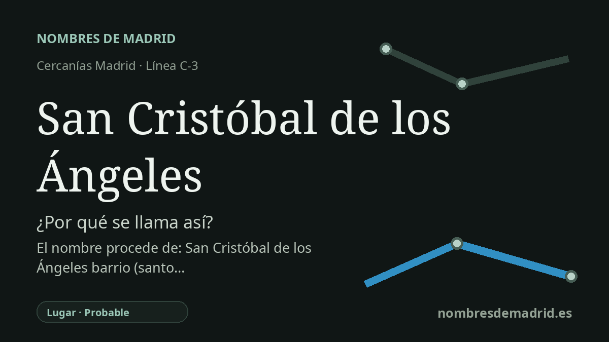

Publicado el · Investigación de Nombres de Madrid · Cómo verificamos cada origen · 8 fuentes consultadas
Respuesta rápida
La estación lleva el nombre del barrio vecino de San Cristóbal de los Ángeles, en Villaverde. Ese nombre combina a San Cristóbal con el cercano Cerro de los Ángeles de Getafe, denominado por la ermita y la Virgen de los Ángeles.
La historia del nombre
El origen más directo del nombre de la estación es local y urbano: San Cristóbal de los Ángeles es el apeadero de Cercanías que sirve al barrio homónimo de Villaverde, en el sur de Madrid. El Consorcio Regional de Transportes de Madrid lo recoge como estación de la línea C-3 con accesos en la calle de Paterna, y la ficha de Renfe lo identifica como SAN CRISTOBAL DE LOS ANGELES, código 60107, dentro del área de Cercanías Madrid.
Detrás del nombre del barrio hay una combinación religiosa y geográfica. San Cristóbal alude a San Cristóbal, santo tradicionalmente invocado por viajeros, peregrinos y conductores. De los Ángeles se entiende mejor por relación con el cercano Cerro de los Ángeles de Getafe; la página municipal de Getafe afirma que el cerro recibe su nombre de la ermita de la Virgen de los Ángeles, donde se venera a la patrona local.
El barrio, sin embargo, no es un topónimo medieval. La documentación municipal madrileña sitúa su origen en una actuación de vivienda social de la Gerencia de Poblados Dirigidos, en colaboración con el Instituto Nacional de la Vivienda, con 6.077 viviendas subvencionadas construidas en fases sucesivas desde 1959. Las mismas fuentes explican que el desarrollo ocupó más de 43 hectáreas de terrenos que habían pertenecido a la fábrica de ladrillo La Norah, cuya chimenea conservada se convirtió en hito del barrio.
El contexto ferroviario es mucho más antiguo que el barrio. El apeadero se encuentra en el corredor Madrid-Aranjuez, una de las rutas fundacionales del ferrocarril español: fuentes oficiales regionales y turísticas de Aranjuez señalan que el ferrocarril Madrid-Aranjuez se inauguró en 1851, como segunda línea de España tras Barcelona-Mataró y primera salida ferroviaria de Madrid. Esa historia es relevante para el lugar, pero no debe usarse como prueba de que el nombre actual de la estación existiera ya en 1851.
La explicación pública mejor respaldada es, por tanto, estratificada: la estación se llama así por el barrio moderno; el nombre del barrio conserva una capa devocional católica y mira hacia el Cerro de los Ángeles de Getafe. Algunas fuentes secundarias indican que la estación se llamó antes Los Ángeles, pero no se ha localizado una fecha oficial para el cambio a San Cristóbal de los Ángeles. La idea del Cerro como «centro de la Península Ibérica» aparece repetida incluso por el Ayuntamiento de Getafe, pero conviene presentarla con cautela porque funciona también como afirmación simbólica y tiene interpretaciones locales competidoras.